Doom Architecture
Nous explorerons les enfers de DOOM et de son architecture, dans ces lieux, nombreuses références sont à l'œuvre.
Du Pandémonium à belsinski, en passant par les pochettes de DIO, nous allons explorer les influences qui sont à l'œuvre ici...
Classique
Voyons ici une des inspirations que Doom trouve dans les oeuvres classique
Le Pandémonium est une peinture de John Martin
Peinte au début du XIX ème siècle, elle nous montre une vision du Pandémonium la capital des enfers abritant le palais de Satan.
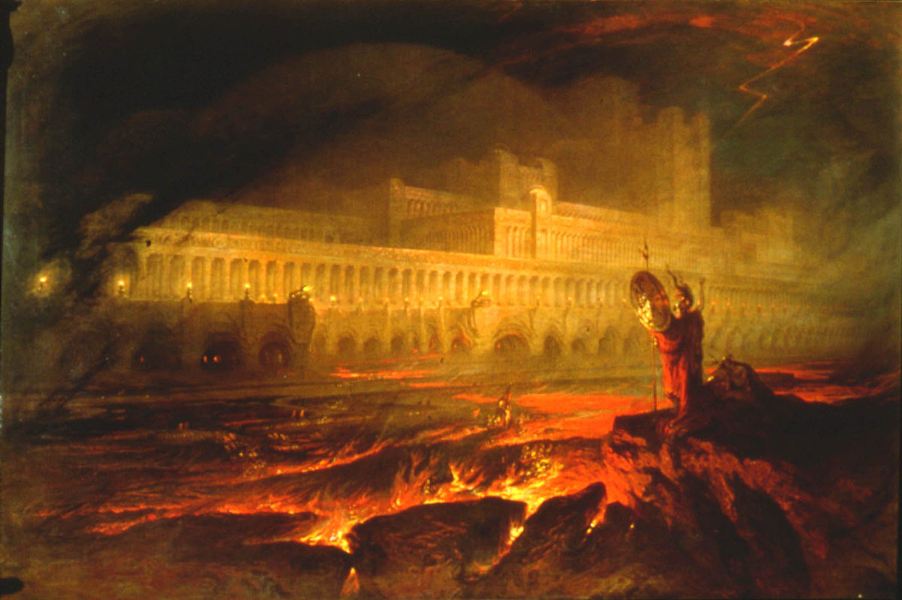
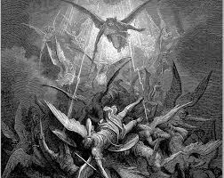
Cette peinture trouve elle même ses inspirations dans le Paradis Perdu de John Milton
Un poème décrivant les orgines d'Adam et Eve, ainsi que la chute de Lucifer en enfer.
Dans Doom :
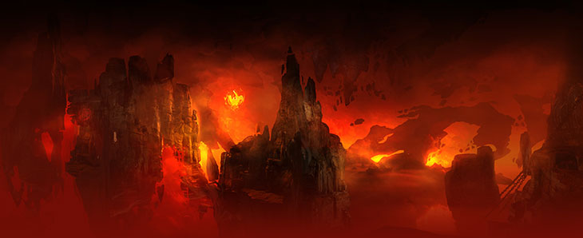
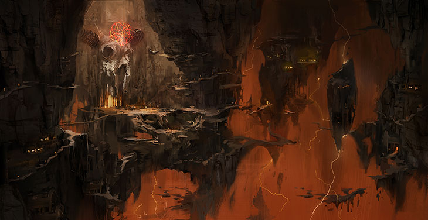
Alien
Voyons ici une des inspirations que Doom trouve dans les visuels la colonie d'Alien 2
Velit esse anim culpa pariatur fugiat laboris veniam.
Id laborum eiusmod duis commodo in ad deserunt consectetur et nostrud in officia quis irure. Minim irure anim nulla consectetur consequat amet laboris ullamco ad elit. Eiusmod sunt est reprehenderit elit ut. Dolore sunt labore deserunt magna Lorem sint amet. Qui consectetur duis magna ut laboris tempor tempor velit commodo.
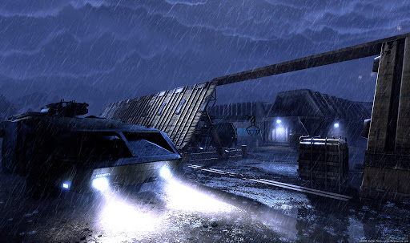

Eu proident aute ad ipsum. Deserunt culpa enim enim minim amet qui mollit deserunt proident deserunt culpa in. Id esse nisi proident anim non sunt sit officia sint in elit ea velit velit. Et in non adipisicing sunt amet aliqua dolor enim in.
Dans Doom :
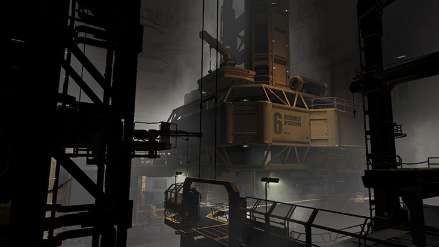
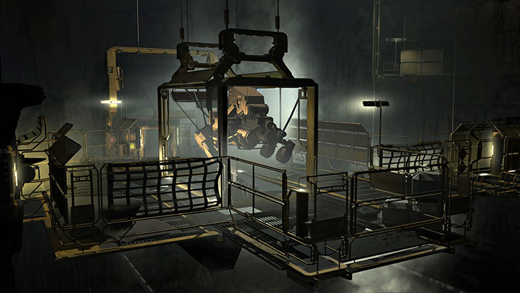
Belsinski
Voyons ici une des inspirations que Doom trouve dans les oeuvres de Belsinski
Velit esse anim culpa pariatur fugiat laboris veniam.
Id laborum eiusmod duis commodo in ad deserunt consectetur et nostrud in officia quis irure. Minim irure anim nulla consectetur consequat amet laboris ullamco ad elit. Eiusmod sunt est reprehenderit elit ut. Dolore sunt labore deserunt magna Lorem sint amet. Qui consectetur duis magna ut laboris tempor tempor velit commodo.
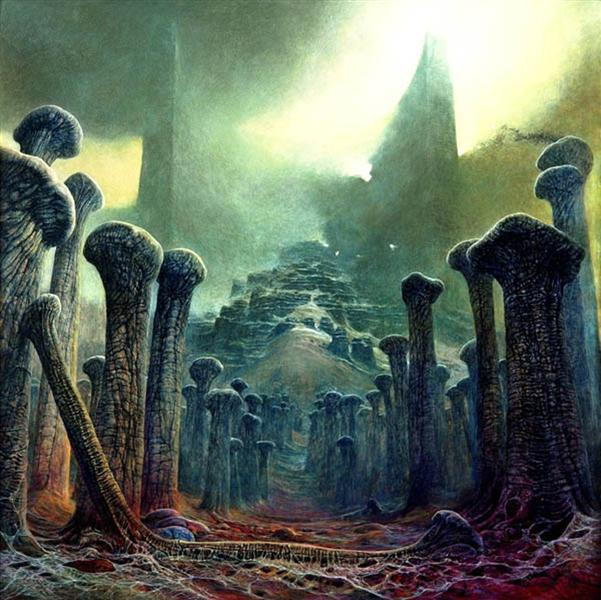
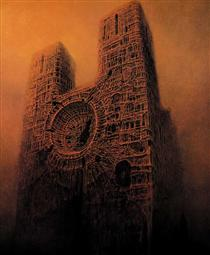
Eu proident aute ad ipsum. Deserunt culpa enim enim minim amet qui mollit deserunt proident deserunt culpa in. Id esse nisi proident anim non sunt sit officia sint in elit ea velit velit. Et in non adipisicing sunt amet aliqua dolor enim in.
Dans Doom :
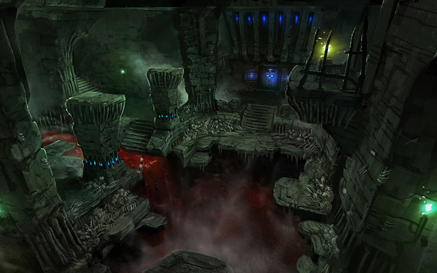
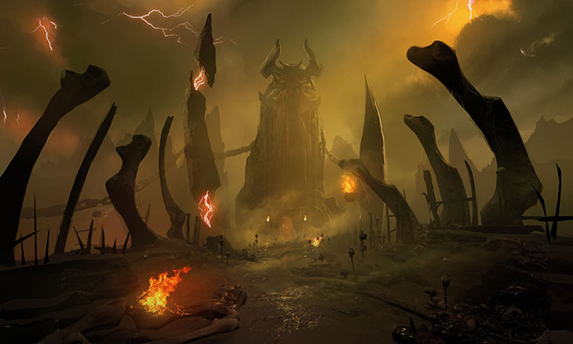